Healthy Cities & Sustainable Communities
Healthy CitiesUrban HealthBuilt EnvironmentCommunity Empowerment
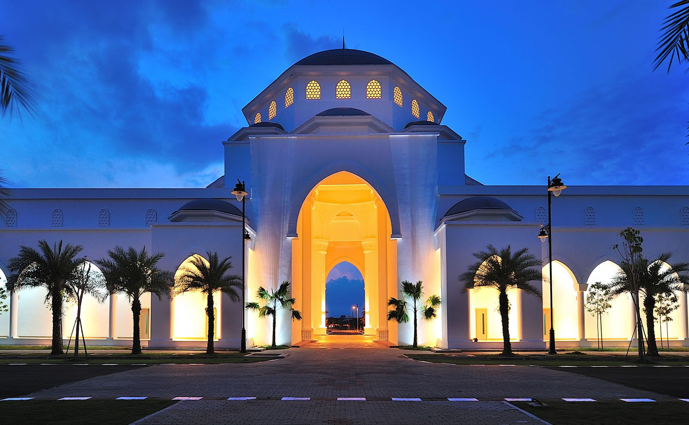
2nd Kedah International Health Conference
Until the opening session · 11 August 2027, 8.30 am (MYT)
Persatuan Pakar Perubatan Kesihatan Awam Negeri Kedah
Kedah State Health Department
Albukhary International University
About the conference
Health risks now move between people, animals and the environment. KIHC 2027 brings every sector that shapes them into one room.
Climate change, extreme heat, pollution, zoonotic diseases, antimicrobial resistance, disasters and the growing burden of non-communicable diseases cannot be solved by the health sector alone. Kedah's mix of urban centres, rice-growing land, coastal and island communities and an international border makes it a natural testing ground for practical, cross-sector solutions.
Building on the first KIHC, this second edition widens the lens from community engagement to One Health, planetary health, sustainability and resilience. Over two days, policymakers, practitioners, researchers, local authorities, industry and communities will share evidence and leave with commitments they can act on.
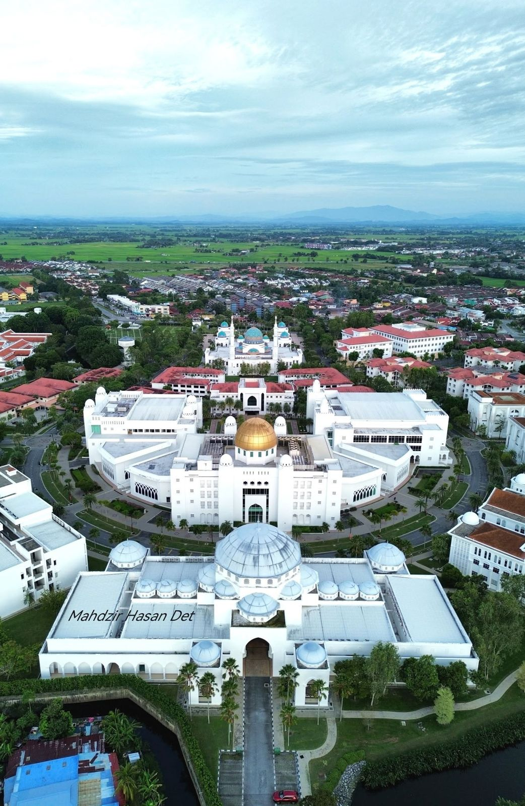
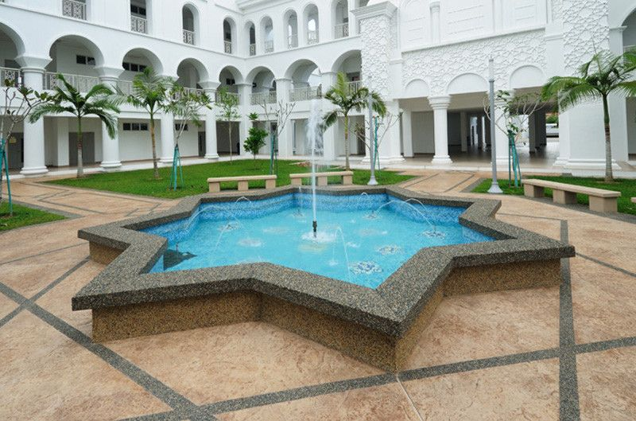
Scientific tracks
Abstracts, symposia and posters are organised under five focus areas, all grounded in One Health and planetary health.
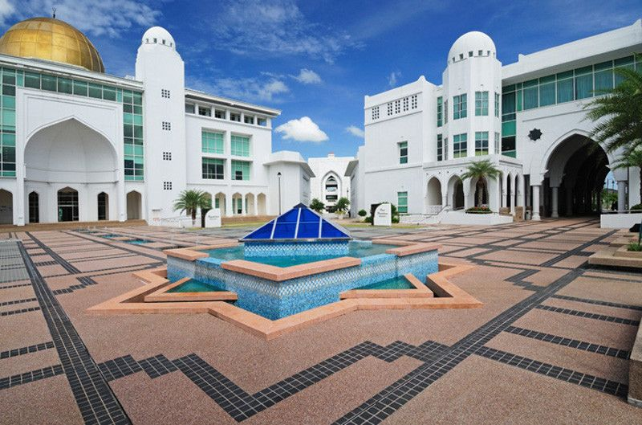
Healthier populations, safer environments and resilient communities for a sustainable future.KIHC 2027 · Expected outcome
Key dates
Online portal goes live
All five tracks
Oral or poster
Presenters must register by this date
Albukhary International University
Indicative months. Exact dates will be announced once confirmed by the Organising and Scientific Committees.
Programme at a glance
Officiated by the Kedah State Government
Speaker to be announced
Oral presentations in parallel halls
Oral presentations in parallel halls
Health, veterinary, environment, local authorities and planners
Rapporteurs' summary and signing
Best oral and poster presentations
Draft outline. The full programme with speakers will be published by the Scientific Committee.
Event highlights
National and international leaders in public health, One Health and sustainability.
Health, veterinary, environment, urban planning and disaster agencies on one stage.
Local innovation and implementation experience, with awards for the best work.
Industry, technology providers, agencies and NGOs showcase solutions.
Shared commitments by sectors, followed up after the conference.
Accepted papers considered for the Kedah Technical Report.
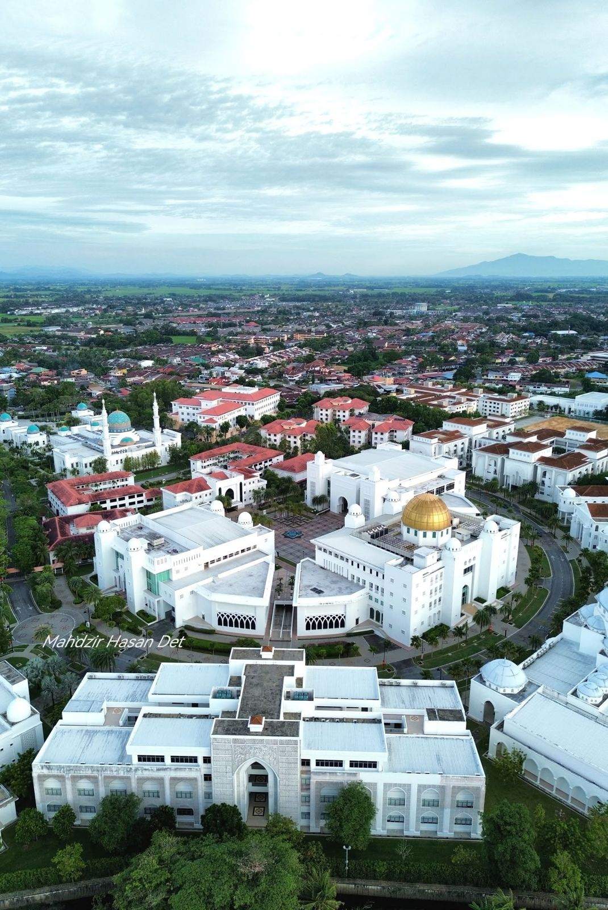
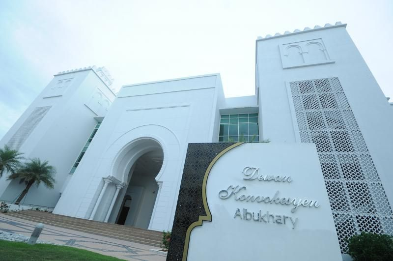
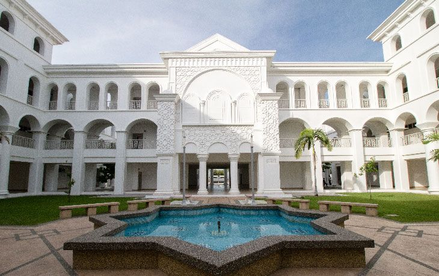
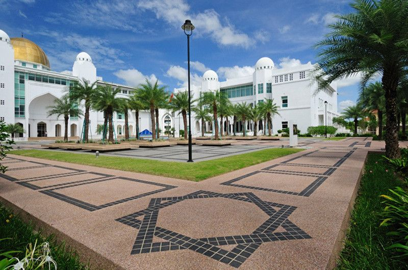
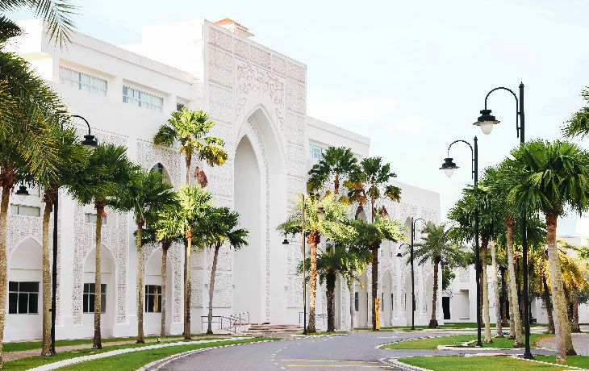
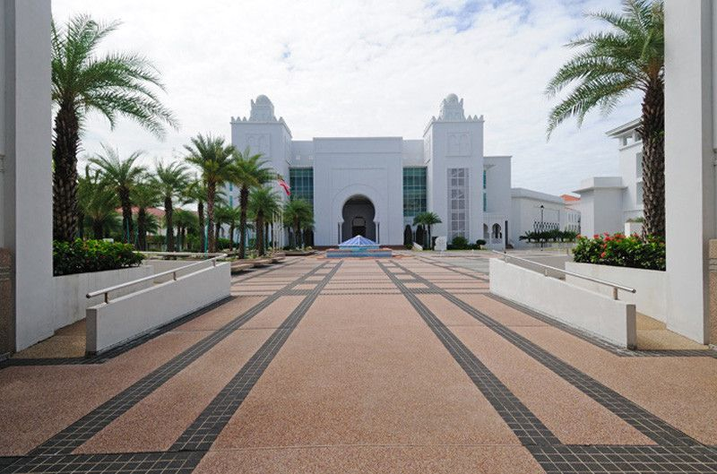
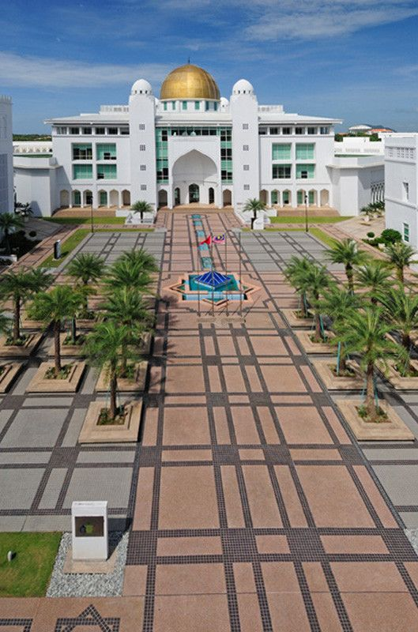
Venue
A campus of white arcades, golden domes and star-patterned courtyards in Alor Setar, the capital of Kedah. AIU joins KIHC 2027 as co-organiser and host.
Registration & fees
Open to everyone who shapes community health, from clinicians and veterinarians to planners, researchers and community leaders.
| Category | Early bird | Normal | On-site |
|---|
Fee includes conference kit, refreshments and lunch on both days, certificate of attendance and CPD points.
Illustrative fees. Amounts shown are placeholders pending approval by the Treasury and Organising Committee.
Malaysia
Instant payment from Malaysian bank accounts. Receipt issued automatically.
Malaysia & international
Visa and Mastercard through a secure payment gateway. Best option for overseas participants.
International
Transfer to the association's account. All bank charges are borne by the participant. Upload proof of payment.
Malaysian agencies
For officers sponsored by their department. Upload the Local Order; an invoice will be issued.
Frequently asked
Yes. International participants can request an official invitation letter after registering. Allow at least four weeks for visa processing.
Every payment receives an official receipt by email, suitable for claims with your employer.
The refund policy will be published with the registration portal. Substitution of participants is usually allowed.
Yes. At least one author of each accepted abstract must register by the early-bird deadline.
Contact the secretariat
Questions about registration, payment or the programme? Reach the KIHC 2027 secretariat.